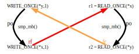
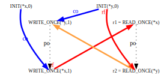

IntroductionIt has been said that Documentation/memory-barriers.txt can be used to frighten small children, and perhaps this is true. But even if it is true, it is woefully inefficient. After all, there is a huge number of children in this world, so a correspondingly huge amount of time and effort would be required in order to read it to them all. This situation clearly calls for automated tooling, which is now available in prototype form. This article gives an introduction to this tooling, describing how to use it and how it works. Feel free to evaluate its effectiveness by introducing it to a small child near you, however, before doing so, you might want to carefully review any local laws regulating child abuse. This document is organized as follows:
This is followed by the inevitable answers to the quick quizzes. Why Formal Memory Models?Even before Linux, kernel hacking has tended to involve more intuition and less formal methods. Formal methods can nevertheless be useful for providing definite answers to difficult questions. For example, how many different behaviors can a computer program exhibit? Particularly one that uses only values in memory, with no user input or output? Computers being the deterministic automata they are, most people would say only one, and for uniprocessor systems they would be basically correct. But multiprocessor systems can give rise to a much wider range of behaviors, owing to subtle variations in the relative timing of the processors and the signals transmitted among them, their caches, and the main memory. Memory models try to bring some order to the picture, first and foremost by characterizing exactly which outcomes are possible for a Symmetric Multiprocessor (SMP) system running a certain (small!) program. Even better, a formal memory model enables tools to automatically analyze small programs, as described here and here. However, those tools are specialized to specific CPU families. For analyzing the Linux kernel, what we need is a tool targeted at a higher level, one that will be applicable to every CPU architecture supported by the kernel. Formality requires extreme precision, far beyond what the informal discussion in memory-barriers.txt can provide. We have been working to bridge this gap. The following section outlines some guiding principles underlying our efforts. PrinciplesOur memory model is highly constrained by the necessity of matching the way the kernel behaves (or is meant to behave!). But even beyond that, there are several characteristics which would be quite desirable for a Linux kernel memory model:
Strength Preferred to WeaknessWhen all else is equal, a stronger memory model is clearly better, but this raises the question of what is meant by “stronger”. For our purposes, one memory model is considered to be stronger than another if it rules out a larger set of behaviors. Thus, the weakest possible memory model is one that would allow a program to behave in any way at all, whereas the strongest possible memory model is one that says no program will ever do anything. Of course, neither of these extremes is appropriate for the Linux kernel, or for much of anything else. The strongest memory model typically considered is sequential consistency (SC), and the weakest is release consistency process consistency (RCpc), with the latter being fairly close to the memory models we propose for the Linux kernel, courtesy of the Alpha, ARM, Itanium, MIPS, and PowerPC hardware that the Linux kernel supports. We also don't want to go overboard; although strength is preferred over weakness as a general rule, small increases in strength are not worth order-of-magnitude increases in complexity. Simplicity Preferred to ComplexitySimpler is clearly better; however, simplicity will always be a subjective notion. A formal-methods expert might prefer a model with a simpler definition, while a kernel hacker might prefer the model that best matched his or her intuition. Nevertheless, simplicity is a useful concept. For example, a model with a simpler definition that better matched the typical kernel hacker's intuition would clearly be preferred over a complex counterintuitive model. Support Existing Non-Buggy Linux-Kernel CodeThe memory model must support existing non-buggy code in the Linux kernel. However, our model (in its current form) is rather limited in scope. Because it is not intended to be a replacement for either hardware emulators or production compilers, it does not support:
Be Compatible with Hardware Supported by the Linux KernelThe memory model must be compatible with the hardware that the Linux kernel runs on. Although the memory model can be (and is) looser than a given instance of hardware, it absolutely must not be more strict. This requirement is ameliorated, to some extent, by the ability of the compiler or the Linux kernel to mask hardware weaknesses:
Nevertheless, the memory model must be sufficiently weak that it does not rule out a behavior exhibited by any of the CPU architectures the Linux kernel has been ported to. Different CPU families can have quite divergent properties, and depending on the issue at hand, ARM, Itanium, MIPS, and/or PowerPC will normally need special attention. Providing compatibility with all the SMP systems supporting Linux is one of the biggest memory-model challenges. Support Future Hardware, Within ReasonThe memory model should support future hardware, within reason. Linux-kernel ports to new hardware must supply their own code for the various memory barriers, and might one day also be able to supply their own code for rcu_dereference() and similar primitives. But since common code is valuable, although it might someday be the case that each architecture can define its own READ_ONCE() (for example), there will need to be a good reason for doing so. This proposal assumes that future hardware will not deviate too far from current practice. On the other hand, if you are porting Linux to (say) a quantum supercomputer, the memory model is likely to be the least of your worries. Be Compatible with the C11 Memory Model, Where Prudent and ReasonableWhere prudent and reasonable, the model should be compatible with the C and C++ memory models. There are a couple areas where it is necessary to depart from these memory models:
On the positive side, the Linux kernel has recently been adding functionality that is closer to that of C and C++ atomics, with the ongoing move from ACCESS_ONCE() to READ_ONCE() and WRITE_ONCE() being one example and the addition of smp_load_acquire() and smp_store_release() being another. Expose Questions and Areas of UncertaintyDefining a memory model inevitably uncovers interesting questions and areas of uncertainty. For example:
The existing software tools are unable to say “maybe” in response to a litmus test, so we constructed not one but two formal models, one strong and the other less strong. These two models will disagree in “maybe” cases. Therefore, kernel hackers should feel comfortable relying on ordering only in cases where both models agree that ordering should be provided, and hardware architects should feel comfortable providing weak ordering only in cases where both models agree that strong ordering need not be provided. (Currently these models are still very much under development, so people should avoid trusting either one too much.) Causality and OrderingIn any discussion of memory models, you are liable to run across people talking about “causality” or “causal relationships”, generally in a rather opaque and imprecise manner. In this article we will avoid these terms as much as possible. But a brief discussion now will help illuminate the topic and will introduce some important ideas. Causality is simply the principle that causes happen before their effects, not after. It is a statement about ordering of events in time (the hard part being to identify which events are causes and which are effects!). Ordering of events is, of course, extremely important for memory models, and such orderings arise in many ways, not all involving any sort of cause-and-effect relation. Orderings will crop up numerous times in our discussion below, whereas (apart from this section) causality will not. Let's start with the simplest and most direct example. If CPU A writes a value to a shared variable in memory, and CPU B reads that value back from the shared variable, then A's write must execute before B's read. This truly is an example of a cause-and-effect relation; the only way B has of knowing about the value stored by A is to receive a message sent directly or indirectly by A (generally some sort of cache-line-update signal). Messages take time to propagate from one CPU or cache to another, and they cannot be received before they have been sent. On the other hand, if CPU B does not read the value stored by A but rather an earlier value, there is no particular temporal relation between A's write and B's read. Certainly not any cause-and-effect relation. B's read could have executed before A's write or it could have executed afterwards, as long as it executed before the message sent by A reached B. Another example of ordering also involves the propagation of writes from one CPU to another. If CPU A writes to two shared variables, these writes need not propagate to CPU B in the same order as the writes were executed. In some architectures it is entirely possible for B to receive the messages conveying the new values in the opposite order. In fact, it's even possible for the writes to propagate to CPU B in one order and to CPU C in the other order. The only portable way for the programmer to enforce write propagation in the order given by the program is to use appropriate memory barriers or barrier-like constructs, such as smp_store_release() or C11 non-relaxed atomic operations. A third example of ordering involves events occurring entirely within a single CPU. Modern CPUs can and do reorder instructions, executing them in an order different from the order they occur in the instruction stream. There are architectural limits to this sort of thing, of course. Perhaps the most pertinent for memory models is the general principle that a CPU cannot execute an instruction before it knows what that instruction is supposed to do. For example, consider the statement “x = y;”. To carry out this statement, a CPU must first load the value of y from memory and then store that value to x. It cannot execute the store before the load; if it tried then it would not know what value to store. This is an example of a data dependency. There are also address dependencies (example: “a[n] = 3;” where the value of n must be loaded before the CPU can know where to store the value 3) and control dependencies (example: “if (i == 0) y = 5;” where the value of i must be loaded before the CPU can know whether to store anything into y). In the general case where no dependency is present, however, the only portable way for the programmer to force instructions to be executed in the order given by the program is to use appropriate memory barriers or barrier-like constructs. Finally, at a higher level of abstraction, source code statements can be reordered or even eliminated entirely by an optimizing compiler. We won't discuss this very much here; memory-barriers.txt contains a number of examples demonstrating the sort of shenanigans a compiler can get up to when translating a program from source code to object code. Memory Models and The Role of CyclesOne way of formalizing a memory model is to create an abstract description of how a running system operates internally, and then enumerate all the possible outcomes this abstract operation can give rise to. There are tools that take this operational approach. Another way is to define the constraints imposed by the memory model, in the form of logical axioms, and then enumerate all the possible outcomes that are consistent with these constraints. A tool using this axiomatic approach is described here. Both approaches take as input a small fragment of code and an assertion (together called a litmus test) and produce an output value indicating whether the memory model permits the code fragment to execute in a way that would make the assertion true. Here is a simple example of a litmus test (with line numbers added) that illustrates the so-called “message-passing” pattern:
Litmus Test #1
Line 1 identifies the source language of the code fragment (“C”) and gives the litmus test's name (“C-MP+o-mb-o+o-mb-o”). Lines 3 and 4 are where initial values could be provided. In this program no explicit initialization is needed, because all variables' initial values default to zero. Lines 6-21 provide the code, in this case, one function for each of two processors. You can choose any name you like for these functions as long as it consists of a ‘P’ immediately followed by the processor's number, numbered consecutively starting from zero. By convention, local variable names begin with ‘r’ (these variables are treated as though they are stored in CPU registers), and global variables must be passed in by reference as function parameters. The names of these function parameters are significant: They must match the names of the corresponding global variables. Finally, lines 23 and 24 provide an “exists” assertion expression to evaluate the final state. This final state is evaluated after the dust has settled: Both processes have completed and all of their memory references and memory barriers have propagated to all parts of the system. The references to the local variables “r1” and “r2” in line 24 must be prefixed with “1:” to specify which processor they are local to. Note that a single “=” in this expression is an equality operator rather than an assignment (the assertion expression is written in the litmus-test language rather than in C). The “/\” character combination means “and”; it is an ASCII representation of the mathematical ‘∧’ symbol. Similarly, “\/” stands for “or”; this assertion could have been expressed just as well in negated form by writing: 23 forall 24 (1:r1=0 \/ 1:r2=1) The “~” character indicates negation, so this assertion could also have been written in non-negated form as follows: 23 exists 24 ~(1:r1=0 \/ 1:r2=1) The software tools mentioned above simply tell you whether the logic expression evaluates to true in all, some, or none of the possible executions of the code. Value judgments are left to the user. The herd tool can be downloaded here, and built as described in the INSTALL.txt file. It may then be run using the linux.def macro file included in the source package, the Litmus Test #1 source file, and the “bell” and “cat” files for the strong kernel memory model described later in this article. The command is as follows: For people who prefer shorter command lines, the strong.cfg configuration file specifies these settings already (along with several others related to the style of the plot files herd is capable of producing). The command is:herd7 -macros linux.def -bell strong-kernel.bell -cat strong-kernel.cat C-MP+o-mb-o+o-mb-o.litmus The output from either command is:herd7 -conf strong.cfg C-MP+o-mb-o+o-mb-o.litmus Test C-MP+o-mb-o+o-mb-o Allowed States 3 1:r1=0; 1:r2=0; 1:r1=0; 1:r2=1; 1:r1=1; 1:r2=1; No Witnesses Positive: 0 Negative: 3 Condition exists (1:r1=1 /\ 1:r2=0) Observation C-MP+o-mb-o+o-mb-o Never 0 3 Hash=3240a31645e46554cb09739d726087ad This output indicates the three possible outcomes from running this code in the Linux kernel:
The outcome r1 == 1 && r2 == 0 is not possible, as indicated by the “Never 0 3” near the end of the output. This forbidden outcome would require a cycle of events, each happening before the next and the last happening before the first:
 The labels in the diagram are defined as follows:
It is important to note that not all cycles are prohibited. To see this, consider the following:
Litmus Test #2
This is exactly the same as the previous litmus test except that the smp_mb() calls have been removed. Despite the fact that the outcome r1 == 1 && r2 == 0 exhibits the same cycle as above, it can in fact occur on weakly ordered systems where, for example, P0's writes and P1's reads can be reordered by the hardware. On such systems, the smp_mb() statements are necessary to ensure that the order of execution of the writes and reads is the same as their order in the source code. This can be confirmed by running the tool in the same way as before, but on the new litmus test: herd7 -conf strong.cfg C-MP+o-o+o-o.litmus The output will be as follows: Test C-MP+o-o+o-o Allowed States 4 1:r1=0; 1:r2=0; 1:r1=0; 1:r2=1; 1:r1=1; 1:r2=0; 1:r1=1; 1:r2=1; Ok Witnesses Positive: 1 Negative: 3 Condition exists (1:r1=1 /\ 1:r2=0) Observation C-MP+o-o+o-o Sometimes 1 3 Hash=791a930f10ec3578ffdda7bf43deeb22 Note that all four possible states are present, and note also the “Sometimes 1 3” near the end of the output. Quick Quiz 1:
Can't the compiler also reorder these accesses?
In fact, on sufficiently weakly ordered systems the cyclic outcome in Litmus Test #2 could occur even without instruction reordering, because the writes might not propagate from P0 to P1 in the order they were executed. And even on more strongly ordered systems, it would be sufficient to reorder either the reads or the writes; it is not necessary to reorder both. For example, if P1's accesses were reordered then we could have the following sequence of events:
This illustrates an important point: Cycles in time of instruction execution are impossible, because time is linearly ordered (in our universe, even if not in all solutions to Einstein's field equations). Part of a memory model's job is to provide the conditions under which one instruction must execute before another and to check for any resulting cycles. On the other hand, if there is no such cycle then it is possible to find an order of execution for all the instructions which is compatible with the memory model's ordering requirements (for example, by doing a topological sort). If this potential execution order did not violate any of the memory model's other requirements, it would demonstrate that the litmus test's assertion could hold. Okay, we admit the preceding paragraph is an oversimplification. Modern CPUs do not execute instructions at precise moments in time; instead they run instructions through complicated multi-stage pipelines and engage in multiple issue (running more than one instruction through the same pipeline stages in parallel). Furthermore, other ordering requirements come into play along with time of execution, such as cache coherence (see below). Nevertheless, the basic idea is valid. It is worth pointing out that computer hardware almost always has additional restrictions beyond what the memory models describe; CPU designers generally do not implement all of the behaviors allowed by the instruction set architecture. The fact that a memory model says a particular litmus test's assertion might hold does not mean it can actually happen on any given computer. It also goes the other way—sometimes CPU designers mistakenly implement a behavior that is prohibited by the instruction set architecture (otherwise known as a “silicon bug” or “CPU erratum”). Specifying a Memory Model in Terms of Prohibited CyclesAs we have just seen, there is a close relationship between orderings and the existence of cycles: If some events are constrained to be ordered in a certain way then that ordering cannot contain a cycle. Conversely, if a given relation among various events does not contain any cycles then it is possible to order those events consistently with the relation. Thus, if we can precisely specify which instructions must execute before others in a given piece of Linux kernel code, we will be well on our way to constructing a formal model that defines the kernel's execution-ordering guarantees in terms of cycles among instructions. Even better, this model can then be used to construct a tool that analyzes litmus tests for execution-ordering problems. (And of course, the same technique can be used for describing a memory model's other ordering requirements.) The herd tool implements a language, called cat, designed to represent memory models, which it does by specifying what cycles are prohibited. This specification is defined in terms of sets and relations involving memory-access events, barriers, and threads. (For our purposes, each processor in a litmus test corresponds to a distinct thread.) herd will be discussed in more detail later; in this section we will see how to write some simple memory models in the cat language. Relaxed Memory Order: Toy SpecificationThe following shows a simple herd program that represents a fragment of the Linux kernel memory model involving simple memory accesses (READ_ONCE() and WRITE_ONCE()) and strong memory barriers (smp_mb()): toy-RMO.cat1 "Toy RMO" 2 3 include "cos.cat" 4 5 let rfe = rf & ext 6 let fence = fencerel(F) 7 8 let rmo-order = fence | rfe | co | fr 9 acyclic rmo-order Line 1 provides a name for the model, and line 3 pulls in some definitions that can be thought of as the herd equivalent to the C-language: #include <stdio.h> However, instead of defining I/O primitives, “cos.cat” defines some basic relations, including the fr relation mentioned earlier. For the litmus tests above (assuming the cyclic execution), the built-in rf (“reads-from”) relation contains the following links:
Line 5 computes rfe (“reads-from external”), which is a restricted version of the rf relation that covers only write-read pairs where the write and the read are executed by different threads. It does this by intersecting (the & operator) the rf relation with the predefined ext relation, which links all pairs of instructions belonging to different threads. For the two litmus tests above, the rfe relation turns out to be exactly the same as the rf relation. Line 6 uses the standard fencerel() function and F event set to define a relation that links any two instructions separated by a memory barrier. For Litmus Test #2, which contains no instances of smp_mb(), this relation is empty. For Litmus Test #1, it contains the following links:
Line 8 defines the rmo-order relation as the union (the | operator) of the fence, rfe, co, and fr relations. rmo-order includes all pairs of instructions for which this toy model of relaxed memory order (RMO) requires the first to execute before the second. Line 9 expresses this requirement by stating that the rmo-order relation is acyclic (contains no cycles). For Litmus Test #2, rmo-order does not contain a cycle, as shown below:  (The dotted “po” edges are for illustration only; they are not present in the rmo-order relation and do not contribute to any cycles.)On the other hand, for Litmus Test #1, the additional links added by the fence relation do create a cycle:
Thus this model correctly distinguishes the “message-passing” examples with and without memory barriers, as can be seen by downloading toy-RMO.cat and passing it via the -cat command-line argument for Litmus Test #2 as follows: herd7 -conf strong.cfg -cat toy-RMO.cat C-MP+o-o+o-o.litmus This produces the following output: Given the lack of a cycle in the rmo-order relationship, the counter-intuitive cyclic execution is permitted, as indicated by “Sometimes 1 3” in the output. In contrast, for Litmus Test #1, with memory barriers, the command line:Test C-MP+o-o+o-o Allowed States 4 1:r1=0; 1:r2=0; 1:r1=0; 1:r2=1; 1:r1=1; 1:r2=0; 1:r1=1; 1:r2=1; Ok Witnesses Positive: 1 Negative: 3 Condition exists (1:r1=1 /\ 1:r2=0) Observation C-MP+o-o+o-o Sometimes 1 3 Hash=c3bdaae6256fa364ad31fb3c1e07c0f5 produces the following output:herd7 -conf strong.cfg -cat toy-RMO.cat C-MP+o-mb-o+o-mb-o.litmus As expected, the memory barriers exclude the counter-intuitive outcome where r1 == 1 && r2 == 0.Test C-MP+o-mb-o+o-mb-o Allowed States 3 1:r1=0; 1:r2=0; 1:r1=0; 1:r2=1; 1:r1=1; 1:r2=1; No Witnesses Positive: 0 Negative: 3 Condition exists (1:r1=1 /\ 1:r2=0) Observation C-MP+o-mb-o+o-mb-o Never 0 3 Hash=3240a31645e46554cb09739d726087ad Relaxed Memory Order: Coherence IncludedConsider this ridiculous single-thread litmus test:
Litmus Test #3
On the face of it, this test can never succeed. If we set x to 3 and then overwrite it with the value 4, how can x possibly end up containing 3? Nevertheless, running the Toy RMO model shows that this outcome is permitted: Test C-CO+o-o Allowed States 2 x=3; x=4; Ok Witnesses Positive: 1 Negative: 1 Condition exists (x=3) Observation C-CO+o-o Sometimes 1 1 Hash=3154e641cc0e24ee5ffdd25aba89ba01 This is because the model does not forbid it, and everything that is not explicitly forbidden is permitted. The model does not account for cache coherence, a feature supported by most modern microprocessors—and demanded by the vast majority of sane kernel hackers. That's one reason why this model should be considered to be a toy. Cache coherence (sometimes referred to as “per-location sequential consistency”) requires that the writes to any one location in memory occur in a single total order (the coherence order), which all the processors must agree on. It also says that within each thread, the coherence order must be consistent with the program order, as described by the following four coherence rules:
In Litmus Test #3 above, there are three writes to the location where x is stored: the initializing write of 0 (implicit in lines 3-4), and the writes of 3 and 4 (lines 8-9). The initializing write always comes first in the coherence order, and the value tested in the “exists” clause is always the value stored by the write that comes last in the coherence order (called the final write). Thus for the test to succeed, the coherence order for x would have to be: x=0, x=4, x=3. But this would violate the write-write coherence rule, because the write that sets x to 3 comes before (in program order) the write that sets it to 4. (Note: The C11 standard recognizes the notion of sequenced-before rather than that of program order. For the most part the two are the same, referring to the order in which loads and stores occur in the source code, but there are a few differences. For example, the compiler is not required to evaluate the arguments to a function call in any particular order. Thus, even though the statement
will always print out “3 4”, after it executes x
may be equal either to 3 or 4.
We will not worry such subtleties for now.
But we will point out that in Litmus Test #3, the
“*x = 3” write
is sequenced before the “*x = 4” write,
and the compiler is not permitted to reorder them.
That is why we have omitted the WRITE_ONCE() calls and
reverted to plain ordinary assignment.
It's okay in this case, because x isn't shared between
processors and we're only trying to make a simple point.
But note that even with this two-line test program,
the compiler is permitted to eliminate the
“*x = 3” write entirely.)
Our Toy RMO memory model can be strengthened to take cache coherence into account. Here is the result: coherent-RMO.cat1 "Coherent RMO" 2 3 include "cos.cat" 4 5 let rfe = rf & ext 6 let fence = fencerel(F) 7 8 let rmo-order = fence | rfe | co | fr 9 acyclic rmo-order 10 11 let com = rf | co | fr 12 let coherence-order = po-loc | com 13 acyclic coherence-order Aside from the name change on line 1, the only difference is the addition of lines 10-13. Line 11 defines the com relation as the union of the rf, co, and fr relations. If you imagine inserting reads into the coherence order for a variable, by placing each read between the write that it reads from and the following write, you'll see that in each case com links a memory access to one that comes later in the coherence order. (com's name arises from the fact that it describes the ways different processors can communicate by writing to and reading from shared variables in memory.) Quick Quiz 2:
The rf, co, and fr terms
in the definition of com describe write-read,
write-write, and read-write links respectively,
corresponding to three of the four
coherence rules.
Why is there no term corresponding to the read-read rule?
po-loc in line 12 is another standard relation; it is the intersection of po and loc, where the loc relation links all pairs of memory accesses that refer to the same location in memory. Thus, po-loc links each memory access to all those that occur after it in program order and access the same variable. Lines 12-13 go on to define coherence-order as the union of po-loc and com and to require that coherence-order not have any cycles. Since Litmus Test #3 contains no reads, its rf and fr relations are empty and therefore com ends up being the same as co. In the non-intuitive execution accepted by the Toy RMO model (where x=3 comes last in the coherence order), com contains the following links:
Test C-CO+o-o Allowed States 1 x=4; No Witnesses Positive: 0 Negative: 1 Condition exists (x=3) Observation C-CO+o-o Never 0 1 Hash=3154e641cc0e24ee5ffdd25aba89ba01 Here's a slightly more sophisticated test that probes the read-read coherence rule:
Litmus Test #4
Because of the write-write coherence rule, we know that the coherence order for x must be: x=0, x=3, x=4. If r1 and r2 were to end up equal to 4 and 3 respectively, it would mean the later read (in program order) had read from the earlier write (in x's coherence order), thereby violating read-read coherence. To see why the Coherent RMO model forbids this result, consider how the various relations would turn out. Because x=4 must come last in the coherence order for x, the co relation contains these links:
Putting these together shows that coherence-order contains the following length-3 cycle:
As can be seen in the following herd output, this cycle is prohibited: Test C-CO+o-o+o-o Allowed States 6 1:r1=0; 1:r2=0; 1:r1=0; 1:r2=3; 1:r1=0; 1:r2=4; 1:r1=3; 1:r2=3; 1:r1=3; 1:r2=4; 1:r1=4; 1:r2=4; No Witnesses Positive: 0 Negative: 6 Condition exists (1:r1=4 /\ 1:r2=3) Observation C-CO+o-o+o-o Never 0 6 Hash=0c7d45bf7c2fb2125ef6013c9c59d437 Quick Quiz 3:
But don't Itanium and SPARC RMO allow read-read reordering of
acccesses to a single variable by a single CPU?
How does the model handle these CPUs?
Exercise: Assuming only that the co relation gives a total ordering of all writes to a particular memory location, prove that any cache-coherent execution of any program (i.e., an execution that obeys the four coherence rules) results in a coherence-order relation without cycles. And conversely, prove that if an execution does violate any of the coherence rules then its coherence-order relation does contain a cycle. How herd WorksThe herd program reads in a litmus test and evaluates it according to a memory model. The model is contained in a .cat file specified by the “-model” command-line option (or a “model” line in the configuration file) plus an optional .bell file specified by the “-bell” option (or a “bell” line in the configuration file). The Bell file, if present, gets processed first. Both files consist of statements in the cat language, and herd treats them almost identically—the only real difference is that the Bell file is allowed to contain “instructions” statements but the Cat file is not. Typically a Bell file is used for common code that can be shared among multiple models, where each model would have its own Cat file. In particular,the “instructions” statements define legal tags that can decorate elementary operations: for instance, one may here specify that a full memory barrier is a barrier with tag mb etc. After loading the Bell and Cat files, herd parses the litmus-test program. The program may contain some specific macros (for instance smp_mb()) which are expanded to internal constructs (for instance a barrier with tag mb). The mapping from user-level macros to internal constructs is defined in a specific file, for instance linux.def. Next, herd interprets the program by constructing a list of events for each thread. For programs written in a high-level language like C, this involves breaking statements and expressions down into a series of elementary operations (read, write, arithmetic/logic on registers, branch, and so on); for programs in assembly language, the individual instructions generally correspond directly to these operations. However, atomic read-modify-write instructions always get represented by two operations, a read and a write, linked by the built-in rmw relation. Events are thus organized as one list per thread, in program order. This is not always straightforward, because of a subtle but important fact: “Program order” refers to the order of instructions as they are presented to the processor's execution unit, not their order in the program's source or object code. While the two orders are often the same, they will differ when branches are present. A forward branch causes some instructions to be left out of the event list, and a backward branch can cause some instructions to be repeated in the list. Since it is not known in advance whether a conditional branch will be taken, each such branch causes herd to generate two event lists: one in which the branch is taken and one in which it isn't. Thus, a program containing two conditional branches will give rise to four lists, a program containing three will give rise to eight, and so on. The po relation then refers to the order of the events in an individual list, and herd has to test each list separately, as a possible program execution. When the program contains a loop, a conditional branch may be taken an indefinitely large number of times. In this situation the number of possible executions would quickly get out of hand, so there is a limit on how many times herd will allow a particular branch to appear in an execution (specified by the “-unroll” command-line option), typically set to 2. Loops with a higher number of iterations simply will not be considered. Then, given a candidate execution, herd has to determine, for each read event, which write event stored the value that the read will retrieve. Again, there's no way to know this in advance, so if a program has more than one write to a particular variable, herd has to try all possible combinations for the rf relation. Just as with conditional branches, this can lead to exponential growth in the number of possible executions to be tested. As part of its processing of a candidate execution, herd carries out a dataflow analysis of the values computed and stored in the local variables (or CPU registers) for each thread. This analysis gets used in several ways:
in the litmus-test program, herd would break it down into two events:WRITE_ONCE(*x, READ_ONCE(*y)); (where rtemp is a temporary local variable), and it would add a linkrtemp = READ_ONCE(*y) WRITE_ONCE(*x, rtemp) rtemp = READ_ONCE(*y) ⟶ WRITE_ONCE(*x, rtemp)to the data relation. Finally, once a particular choice for the po and rf relations has been settled on, the execution checks out okay, and the data, addr, and ctrl relations have been set up, herd runs the statements in the Bell and Cat files to see whether the memory model considers the candidate execution to be allowed. If any of the model's checks fail, the execution is abandoned. Otherwise, herd evaluates the logical assertion at the end of the litmus test. It keeps track of the number of allowed executions for which the assertion is true and the number for which it is false; these are the numbers reported at the end in herd's output. Unlike po and rf, the co relation is not built-in. It has to be computed explicitly by the memory model. In practice this is done by the cos.cat file, which is included near the start of the model's Cat file (see for example line 3 in each of the two RMO memory-model files above). This involves another potentially exponential computation, because it is necessary to try all possible orderings of the write accesses to each variable. herd works in terms of sets of events and relations between events. (A relation is a collection of ordered pairs of events; you can think of each ordered pair as a link going from the first event in the pair to the second.) The cat language used in the Bell and Cat files is rich in operators for constructing and testing these sets and relations. To begin with, herd has a number of built-in sets used for classifying events. Each event is automatically added to the appropriate sets.
In addition, using the “enum” and “instructions” statements, a Bell file can define an enumerated list of tag values and specify that instructions of a specific kind must be labelled with one of these tags. herd then creates a set for each tag value; the name of the set is the same as the name of the tag but with the first letter capitalized, and the set contains all events generated from instructions labelled by the corresponding tag. For example, the following cat code:
defines a bunch of Accesses tags,
and says that all read instructions should be labelled with a
“once”, an “acquire”,
or a “deref” tag.
Given this, the “Once” set would contain all events
corresponding to an instruction (possibly a read, possibly something else)
labelled with the “once” tag,
and similarly for the “Release”,
“Acquire” and “Deref” sets.
herd also comes with a selection of built-in relations, some of which we have already mentioned:
herd's standard libraries stdlib.cat (automatically included for all models) and cos.cat define a few extra relations, which can be used as though they were built-in:
Bell and Cat files can compute their own sets and relations using functions and operators provided by the cat language and libraries, as summarized in the following table. Operators with higher precedence (tighter binding) are higher up in the table.
Although the language includes a variety of statement types, the ones found most frequently in Bell and Cat files are assignment (“let” or “let rec”) and check statements. “let” statements are self-explanatory; we have already seen several examples in the RMO memory models above. “let rec” statements, used for mutually recursive definitions, are more complex; we will see an example below. Check statements come in three forms:
A check can be negated by prefixing it with “~”. Also, a check can be flagged by putting the “flag” keyword in front of it. Unlike a normal check, when a flagged check succeeds it indicates that the execution has encountered some sort of semantic problem. If this happens, herd adds a warning message to its output. Along with the “let”, “include”, and check statements, the only other types of statement we will see are “enum” and “instructions”, both briefly mentioned earlier. The cat language supports many features we won't cover here, including higher-order sets and tuples, pattern matching, user-defined functions, iteration, and recursion in the style of OCaml (the language herd is written in). herd itself also has a large number of features we won't discuss, such as the ability to skip certain checks when testing a memory model or to produce figures (like the ones in this document) illustrating the events and relations in a particular program execution. More complete documentation can be found in the herd manual. With this background, we are ready to examine larger, more realistic memory models. Something like the Linux-kernel memory models, in fact. Introduction to the Linux-Kernel Memory ModelsThis section is mostly concerned with the strong memory model. The other, less strong (we hesitate to call it “weak”) model is derived from the strong one by relaxing several of the less-important constraints. The strong Linux-kernel memory model started out as an operational model, based on the PPCMEM model for PowerPC as presented in two papers (“Understanding POWER Multiprocessors” [pdf] and “Synchronising C/C++ and POWER” [pdf]) by Susmit Sarkar, Peter Sewell, and others. Our model was a modified version of theirs, changed to take into account the properties of other relaxed-memory-order processors supported by the kernel. The herd-style Bell and Cat files discussed below were then developed as a formal axiomatization of this model. The formal version is not 100% equivalent to the original operational version (it accepts some litmus tests that the operational model forbids), but it comes pretty close. The operational model divides a computer system into two subsystems: the processors, which execute instructions, and the memory subsystem, which propagates information about writes and barriers among the processors and is also responsible for determining the coherence order. When a processor executes a write or certain kinds of barriers, it tells the memory subsytem. And when a processor needs to load a value from memory or cache to satisfy a read, it asks the memory subsystem to provide the value. The Processor SubsystemAlthough the underlying operations involved in executing an instruction on a modern CPU can be quite complicated, nevertheless there always comes a point where the CPU has finished evaluating all of the instruction's inputs and outputs and it commits itself irrevocably to using those values as the instruction's results. Conceptually, each instruction that gets executed is committed at a single, precise moment in time. (Instructions that don't get executed, such as those started speculatively in what turns out to be the unused arm of a conditional branch, are not committed.) Instructions may commit in any order and at any rate, subject to certain constraints. For example, an instruction controlled by a conditional branch can't be committed before the branch itself, because until that time the CPU doesn't know for certain which way the branch will go. (The full set of constraints is listed below.) For instructions involving only quantities that are local to the processor, such as register-to-register arithmetic, that's all there is to it: The processor carries out the operations required by the instruction, eventually commits to the result, and moves on. But some instructions need more. In particular, some require the processor to communicate with the memory subsystem. Writes and memory barriers are the simplest case. When a processor commits a write instruction, it tells the memory subsystem the target address of the write and the value to be stored there. It can't do this before the write commits, because once the information has been given to the memory subsystem there's no way to take it back. Similarly, when a processor commits one of the barriers that affect write-propagation order, it informs the memory subsystem, which then uses that information to control the way writes get propagated. Reads are a little more complex. When a processor starts to execute a read instruction, it first has to calculate the target address (which on x86, for example, can involve adding together the value in a base register, the value in an index register optionally scaled by a power of 2, and a constant offset). It then checks to see if there are any uncommitted write instructions that come before the read in program order and have the same target address; if there are then the processor takes the value to be stored by the last such write and uses it as the value for the read. This is called store forwarding. But if there are no such uncommitted writes then the processor has to ask the memory subsystem to retrieve the value at the target address. Either way, we say that the processor satisfies the read, and this also takes place at a precise moment in time. A read instruction cannot commit until it has been satisfied. There's more to it than that, however. Because the read is is not yet committed, the act of satisfying it is not irrevocable. It may turn out, for example, that the values used in calculating the target address were themselves not yet committed and hence are still subject to change. If that happens, the read instruction has to be restarted: The target address must be recalculated and the read must be satisfied again. This can happen several times before the read is committed. In fact, it can even happen several times without the read ever being committed, if the read was started speculatively and then abandoned. Thus, a processor carries out a read instruction by satisfying it (perhaps more than once) and eventually committing it. For most other instruction types, execution only involves committing the instruction, but there is one exception. A strong memory barrier (i.e., smp_mb()) is not finished when it commits. Instead, the processor has to wait for the strong barrier to be acknowledged by the memory subsystem. This doesn't happen until the memory subsystem has propagated the barrier to all the other processors in the system, and the processor is not allowed to begin executing any instructions that come after the strong barrier in program order until then. This is what makes these barriers so strong (and so slow!). The Memory SubsystemTo be written... Bell FileThe full Bell file for Alan Stern's strong model (strong-kernel.bell) is as follows:
Taking this one piece at a time... Bell File: Memory AccessesThe “"Linux kernel strong memory model"” is a name that has no effect on the model's meaning. The following portion of the Bell file defines the types of memory accesses:
The predefined “rmw” relation links the read and the write component of each read-modify-write (RMW) operation. The “let RMW” statement thus creates the set of all read and write events corresponding to an RMW instruction in the litmus-test program. (This shouldn't be necessary, because the RMW set is supposed to be built-in to herd. However at the time this memory model was created, the implementation of the RMW set wasn't working, so it was necessary to define the set manually.) The “enum Accesses” statement defines the types of memory references, corresponding to the C functions listed in the comments. These correspondences are defined in herd's linux.def macro file. The “instructions R” identifies which of the above types of memory references may be associated with a read instruction, the “instructions W” identifies which may be associated with a write instruction, and the “instructions RMW” identifies which may be associated with a read-modify-write instruction. Bell File: BarriersThe next portion of the Bell file defines the types of barrier-like constructs. 17 enum Barriers = 'wmb (*smp_wmb*) || 18 'rmb (*smp_rmb*) || 19 'mb (*smp_mb*) || 20 'rb_dep (*smp_read_barrier_depends*) || 21 'lock (*rcu_read_lock*) || 22 'unlock (*rcu_read_unlock*) || 23 'sync (*synchronize_rcu*) 24 instructions F[Barriers] The “enum Barriers” defines the types of barriers corresponding to the C functions listed in the comments (as set up in the linux.def macro file). The “instructions F[Barriers]” says that these types may be used in various sorts of barrier instructions. Quick Quiz 4:
Given that this is about memory barriers, why
“instructions F[Barriers]” instead of perhaps
“instructions B[Barriers]”?
Bell File: Relating Barriers and Memory AccessesThe next portion of the Bell file defines some relation involving the barrier events and the surrounding memory accesses: 26 let rmb = fencerel(Rmb) & (R*R) 27 let wmb = fencerel(Wmb) & (W*W) 28 let mb = fencerel(Mb) 29 let sync = (po & (_ * Sync)) ; (po?) The standard library's fencerel(S) function returns a relation containing all pairs of events in which the first event precedes (in program order) an event in the S set (for example, an “Rmb” event in the case of the line 26 above) and the second follows it, with all three events being in the same thread. As an example, the following snippet: would produce an “rmb” relation containing only one link:r1 = READ_ONCE(*x); smp_rmb(); r2 = READ_ONCE(*y); smp_mb(); WRITE_ONCE(*z, r3);
(For database programming fans, the “&” operator can be thought of as doing a database full equijoin operation, so that the result is only those elements that appear in both operands. Similarly, the “*” operator can be thought of as a database unconstrained join operation, in this case providing all combinations of pairs of read events. Later on, we will encounter operations that cannot be easily represented by SQL, so we will shift to the notation used for mathematical sets.) The “let wmb = fencerel(Wmb) & (W*W)” definition acts similarly, but it extracts pairs of writes rather than reads, as required for smp_wmb(). The “let mb = fencerel(Mb)” definition keeps all events in the fencerel(Mb) relation, as required for smp_mb(). (It even keeps events that don't correspond to memory accesses, such as the smp_rmb() event above, although they are irrelevant here.) Finally, the “let sync = (po & (_ * Sync)) ; (po?)” definition uses a modified formula in place of “fencerel(Sync)”. It is different from the others in that it also includes pairs where the second event is the synchronize_rcu() call rather than something following it. Otherwise it is like the definition of the mb relation. Quick Quiz 5:
Why wouldn't “let sync = fencerel(Sync)”
work just as well as the modified definition?
Bell File: Relating One-Sided Barriers and Memory AccessesThe next portion of the Bell file defines some relations involving “one-sided” barriers and their surrounding instructions: 31 let acq-po = po & (Acquire*_) 32 let po-rel = po & (_*Release) 33 let po-assign = po & (_*Assign) 34 35 let rb-dep = fencerel(Rb_dep) & (R*R) 36 let deref-po = po & (Deref*M) 37 let lderef-po = po & (Lderef*M) The “acq-po” line defines the relation appropriate for smp_load_acquire() operations. This is the intersection of the program order (po) relation with the set of all pairs of events in which the first is an Acquire and the second can be anything (the “_” wildcard). Consider the following example containing code fragments running on two threads, where x, y, and z are all initially zero: This results in the following po links:Thread 0 Thread 1 -------- -------- WRITE_ONCE(*x, 1); r2 = smp_load_acquire(y); r1 = READ_ONCE(*z); r3 = READ_ONCE(*x); smp_store_release(y, 1); WRITE_ONCE(*z, 1);
The first three links relate events in Thread 0 and the last three relate events in Thread 1. (The number of links in po is clearly quadratic in the number of statements in a given thread, but that is OK because several other things are exponential! Knowing this, you can understand why this sort of verification technique is unlikely to handle all 20 million lines of the Linux kernel at one go. Instead, these techniques should be applied to small but critical segments of code.) In this example, there is only one Acquire event: “r2 = smp_load_acquire(y)”. Intersecting po with the set of all pairs of events in which the first is an Acquire gives the acq-po relation:
The “po-rel” definition works quite similarly, but with prior memory accesses rather than subsequent ones and with releases rather than acquires. The “po-assign” definition works the same as “po-rel”, but for rcu_assign_pointer() rather than smp_store_release(). The “rb-dep” definition is the same as that of “rmb” earlier, except that it applies to smp_read_barrier_depends() instead of smp_rmb(). The “deref-po” definition is the same as that of “acq-po”, but for rcu_dereference() instead of smp_load_acquire(). The “lderef-po” definition is the same as that of “deref-po”, but for lockless_dereference(). Note that these three relations do not correspond exactly to ordering constraints, because smp_read_barrier_depends(), rcu_dereference(), and lockless_dereference() only order pairs of accesses where the second is “dependent” on the first (more precisely, where there is an address dependency between them); this restriction is described in more detail later on. Bell File: Classes of FencesThe next portion of the Bell file groups fences by strength: 39 let rd-dep-fence = rb-dep | deref-po | lderef-po 40 let exec-order-fence = rmb | acq-po 41 let weak-fence = wmb 42 let medium-fence = po-rel | po-assign 43 let strong-fence = mb | sync 44 45 let transitive-fence = strong-fence | medium-fence 46 let propagation-fence = transitive-fence | weak-fence 47 let ordering-fence = propagation-fence | exec-order-fence These groupings correspond to the classes of barriers discussed earlier. They will be used in the Cat file to organize the various ordering requirements. Bell File: RCU Read-Side Critical SectionsThe final section of the Bell file is the most complex, due to the fact that rcu_read_lock() and rcu_read_unlock() must come in matching pairs and can be nested. 49 (* Compute matching pairs of nested Locks and Unlocks *) 50 let matched = let rec 51 unmatched-locks = Lock \ domain(matched) 52 and unmatched-unlocks = Unlock \ range(matched) 53 and unmatched = unmatched-locks | unmatched-unlocks 54 and unmatched-po = (unmatched * unmatched) & po 55 and unmatched-locks-to-unlocks = (unmatched-locks * 56 unmatched-unlocks) & po 57 and matched = matched | (unmatched-locks-to-unlocks \ 58 (unmatched-po ; unmatched-po)) 59 in matched 60 61 (* Validate nesting *) 62 flag ~empty Lock \ domain(matched) as unbalanced-rcu-locking 63 flag ~empty Unlock \ range(matched) as unbalanced-rcu-locking 64 65 (* Outermost level of nesting only *) 66 let crit = matched \ (po^-1 ; matched ; po^-1) The “matched” relation is defined by the mutually recursive set of definitions on lines 50-59. The idea behind this code is to associate an unmatched Lock event with a later unmatched Unlock event whenever no unmatched events lie between them, and to repeat this operation recursively until nothing more can be matched. To that end, lines 51-53 form the sets of not-yet-matched Lock and Unlock events and their union. Line 54 then forms the relation of all pairs of these unmatched events that occur in the same thread, in program order. Lines 55-56 similarly form the relation of all such pairs where the first member of the pair is a Lock event and the second is an Unlock. The interesting part is lines 57-58, which take pairs of unmatched Lock and Unlock events and add them to the “matched” relation, but only if there are no unmatched events in between. They do this by applying the “\” (backslash) subtraction operator to remove from the unmatched-locks-to-unlocks relation any pairs having an intervening unmatched Lock or Unlock. The “;” operator sequences relations (if relation x contains a⟶b and relation y contains b⟶c then (x ; y) will contain a⟶c). In this case, you can see that “unmatched-po ; unmatched-po” contains all pairs a⟶c of unmatched events for which a third unmatched event b lies between them in program order. The only purpose of line 59 is to prevent the unmatched-locks, unmatched-unlocks, unmatched, unmatched-po, and unmatched-locks-to-unlocks definitions from leaking out to the surrounding context. (Grammatically speaking, the construction used here is a let rec expression inside a let statement. In fact, let or let rec expressions are very much like GCC's statement expressions; the statement in lines 50-59 is syntactically analogous to “x = ({int x = u; if (x < v) x = v; x;})”.) Line 62 then checks whether there are any unmatched Lock events, and line 63 does the same for unmatched Unlock events. The “flag ~empty” statement flags the litmus test as containing a semantic error if the specified set isn't empty, and the “as ...” clause merely provides a name to identify the particular failure mode. Lastly, line 66 computes those matching pairs which lie at the outermost level of nesting. They are the important ones, because they delimit RCU read-side critical sections. It does this by subtracting from “matched” all pairs which lie entirely between another matched pair. The “^-1” inversion operator computes the converse of a given relation; that is, it computes the collection of all links a⟶b such that b⟶a is in the given relation. Thus, po^-1 contains all pairs of events in reverse program order. To see how “(po^-1 ; matched ; po^-1)” selects inner matched pairs, consider the following example: Starting at line 2, a “po^-1” step takes us back to line 1, a “matched” step takes us to line 4, and a second “po^-1” takes us back to line 3. Thus, this expression correctly identifies line 2 ⟶ line 3 as an inner matched pair. You can easily see that this mechanism will remove from the matched relation all (and only!) matched pairs that are nested within another matched pair.1 rcu_read_lock(); 2 rcu_read_lock(); 3 rcu_read_unlock(); 4 rcu_read_unlock(); We are now ready to proceed to the Cat file. Cat FileThis section describes an slightly outdated version of strong-kernel.cat, and will be updated soon. The weak model is currently under development. The full cat file (linux.cat) for Alan Stern's strong model (strong-kernel.cat) is as follows: 1 "Linux kernel memory model" 2 3 (* Alan Stern, 31 May 2016 *) 4 5 include "cos.cat" 6 7 let com = rf | co | fr 8 let coherence-order = po-loc | com 9 acyclic coherence-order as coherence 10 11 empty rmw & (fre;coe) as atomic 12 13 14 let rdep = addr & (_*R) & rd-dep-fence 15 let dep = addr | data 16 let dep-rfi = dep ; rfi 17 let rdw = po-loc & (fre ; rfe) 18 let detour = po-loc & (coe ; rfe) 19 let atomicpo = (RMW*RMW) & po 20 let addrpo = addr ; po 21 22 let ppo = 23 rdep | dep-rfi | rdw | 24 detour | atomicpo | 25 ((dep | po-loc | ctrl | addrpo) & (_*W)) 26 let strongly-hb = ppo | fence | rfe 27 let obs = ((coe|fre) ; barrier+ ; rfe) & int 28 29 let rec transitive-propbase = rfe? ; transitive-fence ; hb* 30 and transitive-obs = (hb* ; (coe|fre) ; barrier* ; 31 transitive-propbase) & int 32 and hb = strongly-hb | (addr+ ; strongly-hb) | 33 obs | transitive-obs 34 35 acyclic hb as causality 36 37 38 let propbase = barrier | transitive-propbase 39 let strong-prop = fre? ; propbase* ; rfe? ; strong-fence ; hb* 40 let prop = (transitive-propbase & (W*W)) | strong-prop 41 let atomic-hb = hb+ & ((RMW&W) * _) 42 let cpord = co | prop | atomic-hb 43 44 acyclic cpord as propagation 45 46 47 (* Propagation between strong fences *) 48 let basic = hb* ; cpord* ; fre? ; propbase* ; rfe? 49 50 (* Chains that can prevent the RCU guarantee *) 51 let s-link = sync ; basic 52 let c-link = po ; crit^-1 ; po ; basic 53 let rcu-path0 = s-link | 54 (s-link ; c-link) | 55 (c-link ; s-link) 56 let rec rcu-path = rcu-path0 | 57 (rcu-path ; rcu-path) | 58 (s-link ; rcu-path ; c-link) | 59 (c-link ; rcu-path ; s-link) 60 61 irreflexive rcu-path as rcu Quick Quiz 6:
This strong model is insanely complex!!!
How can anyone be expected to understand it???
Again, taking this one piece at at time... First, the “memory barriers” is the title, and the “include "cos.cat"” pulls in some common definitions, similar to the C language's “#include <stdio.h>”. Cat File: SC Per Location and AtomicsThe first section of the litmus.cat file defines SC per location, which again means that all CPUs agree on the order of reads and writes to any given single location. Therefore, any situation where CPUs disagree on the order of reads and writes must involve more than one variable. This section also provides ordering constraints for RMW atomic operations. 1 let com = rf | co | fr 2 let coherence-order = po-loc | com 3 acyclic coherence-order as coherence 4 5 empty rmw & (fre;coe) as atomic The “com” relation shown on line 1 is the union of:
The resulting “com” relation tracks the communication of data, hence the name. The predefined “po-loc” relation intersects the program-order relation “po” with the per-location “loc” relation. This results in “po-loc” being an union of relations, one per variable, connecting all per-thread accesses to any given variable, in program order. The “coherence-order” relation on line 2 takes the union of “po-loc” and “com”, which combines the communication of data with the order in which each location is accessed by each thread, but maintaining all relations on a per-location basis. The “acyclic” constraint on line 3 prohibits cycles in the resulting “coherence” relation, in other words, that everyone agrees on the order of accesses to each location. Line 5 enforces the atomicity RMW operations on a given variable: More specifically no write to the given variable can intervene between the read and the write of the RMW operation. Recall that the “rmw” relationship connects a given RMW operation's read to its write. Note also that “fre;coe” connects any read to a given variable to some later write to that same variable, where at least one of the intervening writes was executed by some other thread. If the initial read was a given RMW operation's read and the final write was this same RMW operation's write, atomicity has been violated: Some other thread's write appeared after the RMW's read but before its write. Therefore, line 5 requires that the intersection of “rmw” and “fre;coe” be the empty set, thus prohibiting violations of atomicity. Cat File: Intra-Thread OrderingThe next portion of the file defines intra-thread ordering relationships. Here “intra-thread” means that the ordered accesses are within the same thread. Some of the relationships will reference other threads. 1 let rdep = addr & (_*R) & rd-dep-fence 2 let dep = addr | data 3 let dep-rfi = dep ; rfi 4 let rdw = po-loc & (fre ; rfe) 5 let detour = po-loc & (coe ; rfe) 6 let atomicpo = (RMW*RMW) & po 7 let addrpo = addr ; po The “addr” and “data” relations define address and data dependencies respectively. An address dependency occurs when a previously loaded value is used to form the address of a subsequent load or store within the same thread. A data dependency occurs when a previously loaded value is used to form the value stored by a subsequent store within the same thread. However, the Linux kernel respects neither address nor data dependencies unless: (1) The dependency is headed by rcu_dereference() or lockless_dereference() or (2) There is an smp_read_barrier_depends() between the load heading the dependency chain and the dependent memory reference. This requirement for a special operation helps to document the intent, and also allows architectures to include any special instructions required to enforce dependency ordering, for example, DEC Alpha requires a memory barrier if the dependent access is a read. Line 1 defines the “rdep” by intersecting the “rd-dep-fence” (which covers rcu_dereference(), lockless_dereference() and smp_read_barrier_depends()) with the set of address dependencies and with “(_*R)”, which is the set of pairs of operations where the second member of the pair is a read. This results in address dependencies leading to a read, but only those cases that enforce ordering between the load of the address and the read from that address. This distinction is necessary for DEC Alpha: For all other systems, the definition of “rdep” could omit the intersection with “rd-dep-fence”. Quick Quiz 7:
For what code would this distinction matter?
Line 2 defines the “dep” relationship, which is simply the union of address and data dependencies. Line 3 defines the “dep-rfi” relationship, which contains dependencies leading to a store, but where that store is read by a later load in that same thread. Line 4 defines the “rdw” relationship, which contains load-store pairs within a given thread, where the load and store are to the same variable, but where at least one store to this same variable from some other thread intervened between this thread's load and store. Line 5 does the same for store-load pairs, resulting in the “detour” relationship. Line 6 forms the “atomicpo” relationship, which accumulates pairs of RMW operations where both members of each pair are on the same thread, and where the first member of the pair precedes the second member in program order. Finally, line 7 defines the “addrpo” relationship, which relates operations heading address dependencies with any operations following the dependent operation in program order. Quick Quiz 8:
Why would an operation following an address dependency get any special
treatment?
After all, there does not appear to be any particular ordering relationship
in the general case.
Cat File: Happens-BeforeThe next portion of the file combines the effects of dependencies, barriers and grace periods to arrive at a causally ordered happens-before (“hb”) relationship.1 let ppo = 2 rdep | dep-rfi | rdw | 3 detour | atomicpo | 4 ((dep | po-loc | ctrl | addrpo) & (_*W)) 5 let strongly-hb = ppo | fence | rfe 6 let obs = ((coe|fre) ; barrier+ ; rfe) & int 7 8 let rec transitive-propbase = rfe? ; transitive-fence ; hb* 9 and transitive-obs = (hb* ; (coe|fre) ; barrier* ; 10 transitive-propbase) & int 11 and hb = strongly-hb | (addr+ ; strongly-hb) | 12 obs | transitive-obs 13 14 acyclic hb as causality The “ppo” (preserved program order) relationship is defined on lines 1-4. This definition simply unions the sets of fence-free relationships for which ordering is guaranteed when the corresponding operations are executed within a given thread. The prohibition against speculating writes is taken into account with the intersection with “(_*W)” on line 4. Quick Quiz 9:
Why does “ppo” intersect “po-loc”
with “(_*W)”?
Don't we need to enforce full cache coherence, not just cache coherence
for trailing writes?
Quick Quiz 10:
Why do rcu_dereference() and
lockless_dereference() respect control dependencies?
Line 5 defines “strongly-hb” (strongly happens-before), which combines “ppo” with fences and with cross-thread reads-from relationships (“rfe”). This relationship provides those single-step causal relationships that remain causal on DEC Alpha. Line 6 defines the “obs” (observation) set of relationships, in which a read operation observes the indirect effect of one of that thread's preceding writes, mediated by a read and a write separated by at least one barrier on some other thread. This set contains pairs of operations on a given thread (courtesy of the intersection with “int”) that are ordered by at least one fence on some other thread. The “(coe|fre)” gets us to that other thread, the “barrier+” is one or more memory-barrier instructions (including smp_load_acquire() and smp_store_release()) on that same thread, and finally the “rfe” gets us back to the original thread. (Of course, if it weren't for the intersection with “int”, that “rfe” might instead take us to a third thread.) The “ppo”, “strongly-hb”, and “obs” relationships have provided us with casual relationships involving at most two threads. Causal relationships can extend over an arbitrarily large number of thread (in theory, anyway), and the purpose of the recursive definition of “hb” (happens-before) spanning lines 8-12 is exactly to extend causality, but in a way supported by all architectures that run Linux. It is best to start with the base case on lines 11 and 12, which union the “strongly-hb” relationship (optionally preceded by an indefinitely long series of address dependencies) with the “obs” relationship. This results in all of the orderings involving a pair of threads. Then line 8's “transitive-propbase” (transitive propagation base) relationship works backwards in time, adding an optional cross-thread reads-from (“rfe”) relationship and a transitive fence to an existing series of “hb” relationships. This existing series is permitted to be empty, so that “rfe? ; transitive-fence” is a base case for “transitive-propbase” (but not for “hb”). Lines 9 and 10 define “transitive-obs” (transitive observation) relationship. Because this is unioned directly into “hb”, it forms another base case in combination with “transitive-propbase”, namely “((coe|fre);barrier*;rfe;transitive-fence)&int”. This base case is roughly similar to the “obs” relationship defined on line 6, hence the similar name. The inductive case is an arbitrarily long sequence of causally related events that begin and end on the same thread. Putting the “transitive-propbase”, “transitive-obs”, and “hb” relationships together (recursively!), we get an arbitrarily long causal happens-before relationship. Line 14 says that these causal relationships cannot form cycles, which should be intuitively appealing to anyone who does not possess a time machine. Cat File: Coherence PointsEven in weakly ordered systems, ordering extends somewhat beyond strict causality, for example, it includes the notion of coherence points. The corresponding ordering constraints are described below. 1 let propbase = barrier | transitive-propbase 2 let strong-prop = fre? ; propbase* ; rfe? ; strong-fence ; hb* 3 let prop = (transitive-propbase & (W*W)) | strong-prop 4 let atomic-hb = hb+ & ((RMW&W) * _) 5 let cpord = co | prop | atomic-hb 6 7 acyclic cpord as propagation Line 1 defines “propbase” (propagation base). This can be either some sort of memory barrier (“barrier”) or a “transitive-propbase” an arbitrarily long (including zero-length) series of happens-before relationships that begins with a transitive fence (and that is optionally preceded by an external reads-from relationship). Line 2 defines “strong-prop” (strong propagation), which adds a strong fence (that is, either smp_mb() or synchronize_rcu()), and optionally much else besides to a (possibly empty) series of “propbase” relationships. Next, line 3 defines “prop” (propagation), which augments “strong-prop” with “transitive-propbase”, but restricted to begin and end with a write operation. Next, line 4 folds in the beginnings of support for atomic RMW operations by defining the “atomic-hb” (atomic happens-before) relationship. This relationship is any non-zero-length series of happens-before relations ships where the first operation is the write portion of an atomic RMW operation. The stage is then set for line 5 to define the “cpord” (control-point order) relationship, which is just the union of the coherence, propagation, and atomic-happens-before relationships. Line 7 then requires that this relationship be acyclic. This should be intuitively appealing to hardware architects who do not possess a time machine. The happens-before and coherence-points machinery can be complex, but fortunately, many common use cases take simple paths through this happens-before machinery, for example:
Litmus Test #5
After all three threads have completed, is the outcome shown on line 30 possible? Referring to the bell file, we see that lines 8⟶9, 16⟶17, and 25⟶26 are each examples of the “transitive-weak-fence” relationship. Other bell-file definitions mean that all three are also examples of the “weak-fence”, “transitive-fence”, “barrier”, and “fence” relationships. In addition, lines 9⟶16 and 17⟶25 are examples of the “rfe” relationship. Finally, lines 26⟶8 is an example of the “fre” relationship. Referring now to the cat file, we see that lines 8⟶9, 16⟶17, 25⟶26, 9⟶16, and 17⟶25 are each examples of the “strongly-hb” relationship, by virtue of them being examples of either the “fence” or “rfe” relationships. This in turn means that each of these relationships are examples of the “hb” base case. Let's call 8⟶9 a “transitive-fence” and each of 16⟶17, 25⟶26, 9⟶16, and 17⟶25 an “hb”. Then the series 8⟶9⟶16⟶17⟶25⟶26 is an example of “transitive-propbase”. Now let's look at “transitive-obs”, ignoring the possibly-empty “hb*” and “barrier*” components of that relationship. This leaves us with “(coe|fre);transitive-propbase”. Now 26⟶8 is an “fre”, so given that 8⟶9⟶16⟶17⟶25⟶26 is a “transitive-propbase”, and given that the series 26⟶8⟶9⟶16⟶17⟶25⟶26 begins and ends in the same process, this series is a “transitive-obs”. Because “transitive-obs” can be an “hb” and “hb” must be acyclic, the cycle 26⟶8⟶9⟶16⟶17⟶25⟶26 is forbidden. This is confirmed by running the command: herd7 -macros linux.def -bell strong-kernel.bell -cat strong-kernel.cat C-ISA2+o-rel+acq-rel+acq-o.litmus Which produces the following output: The “Never 0 7” should be reassuring, given that this cycle is analogous a series of lock releases and acquires, which had jolly well better be fully ordered!Test C-ISA2+o-rel+acq-rel+acq-o Allowed States 7 1:r1=0; 2:r2=0; 2:r3=0; 1:r1=0; 2:r2=0; 2:r3=1; 1:r1=0; 2:r2=1; 2:r3=0; 1:r1=0; 2:r2=1; 2:r3=1; 1:r1=1; 2:r2=0; 2:r3=0; 1:r1=1; 2:r2=0; 2:r3=1; 1:r1=1; 2:r2=1; 2:r3=1; No Witnesses Positive: 0 Negative: 7 Condition exists (1:r1=1 /\ 2:r2=1 /\ 2:r3=0) Observation C-ISA2+o-rel+acq-rel+acq-o Never 0 7 Hash=9762857b08e4db85dbbf52a7b43068e9 Let's now look at a roughly similar example:
Litmus Test #6
After all three threads have completed, is the result shown on line 31 possible? Referring again to the bell file, we see that lines 8⟶9 and 17⟶18 are both examples of the “transitive-weak-fence” relationship. Other bell-file definitions mean that both are also examples of the “weak-fence”, “transitive-fence”, “barrier”, and “fence” relationships. Also, lines 25⟶27 is an example of the “strong-fence” relationship, which in turn means that it is an example of the “barrier” and “fence” relationships. Finally, lines 9⟶17 is an example of the “rfe” relationship and lines 18⟶25 and 27⟶8 are examples of the “fre” relationship. Switching out attention to the cat file, we see that lines 8⟶9, 9⟶17, 17⟶18, and 25⟶27 are all examples of the “strongly-hb” relationship by virtue of being examples of either the “fence” or “rfe” relationships. However, our previous strategy using the “transitive-obs” relationship fails because it only allows a single “fre” relationship in a series that is required to begin and end on the same thread, and we instead have two “fre” relationships, both of which must be traversed to get back to the same thread. Therefore, our “hb” relationships cover only the series 8⟶9⟶17⟶18 and the series 25⟶27, with no way to connect the two. The “strong-prop” relationship is another possibility, but it again only allows for a single “fre” relationship. There are no “rmw” relationships, so the “atomic” check cannot help, either. The “rdw” relationship requires a “(fre;rfe)” series that does not exist in this litmus test. Finally, “obs” allows only a single “fre” relationship in a series that begins and ends on the same thread. Therefore, the outcome r1&&!r2&&!r3 really can happen, which will be no surprise to anyone who has heard that powerpc's locks do not provide global ordering. After all, this litmus test can be thought of as modeling P0() releasing a lock, P1() acquiring it, and P2() being an external observer checking for misordering of P0()'s write to a with P1()'s read from c. In addition, “fre” relationships are non-causal, so it makes sense that they can play only a limited role in the forbidding of cycles. In contrast, “rfe” relationships are causal, and thus much more likely to result in forbidden cycles. And this can be confirmed by running the following command line: herd7 -macros linux.def -bell strong-kernel.bell -cat strong-kernel.cat C-W+WRC+o-rel+acq-o+o-mb-o.litmus Which results in the following output: Test C-W+WRC+o-rel+acq-o+o-mb-o Allowed States 8 1:r1=0; 1:r2=0; 2:r3=0; 1:r1=0; 1:r2=0; 2:r3=1; 1:r1=0; 1:r2=1; 2:r3=0; 1:r1=0; 1:r2=1; 2:r3=1; 1:r1=1; 1:r2=0; 2:r3=0; 1:r1=1; 1:r2=0; 2:r3=1; 1:r1=1; 1:r2=1; 2:r3=0; 1:r1=1; 1:r2=1; 2:r3=1; Ok Witnesses Positive: 1 Negative: 7 Condition exists (1:r1=1 /\ 1:r2=0 /\ 2:r3=0) Observation C-W+WRC+o-rel+acq-o+o-mb-o Sometimes 1 7 Hash=8e3c5d7d5d36f2b1484ff237e8d22f91 However, full barriers (smp_mb()) can be used to force the Linux kernel to respect full non-causal ordering, and this is the main job of the “cpord” relationship. To see this, consider the following store-buffering litmus test:
Litmus Test #7
Can the cyclic outcome “!r1&&!r2” called out in line 25 really happen? Lines 10⟶12 and 19⟶21 are both examples of the “strong-fence” relationship, which in turn means that they are also examples of the “barrier” and “fence” relationships. Lines 12⟶19 and 21⟶10 are examples of the “fre” relationships. As noted earlier, the fact that you have to go through two “fre” relationships to get back to the original thread means that the “hb” relationship does not apply. We therefore need to look to the “cpord” relationship. Quick Quiz 11:
Is there an easy way to tell which definitions have effect for a
given litmus test?
Omitting most of the optional elements from the “strong-prop” relationship results in the following: “fre?;strong-fence”, a relationship that has as members the pair of series 10⟶12⟶19 and 19⟶21⟶10. Any “strong-prop” relationship is also a “prop” relationship and a “cpord” relationship. However, the “cpord” relationship is required to be acyclic, that is, no matter how you string together “cpord” relations, there must not be a cycle. Given that stringing together 10⟶12⟶19 and 19⟶21⟶10 results in the cycle 10⟶12⟶19⟶21⟶10, we are forced to conclude that the store-buffering litmus test's cyclic outcome “!r1&&!r2” is forbidden. Quick Quiz 12:
Why does “cpord” prohibit a cycle containing two
“fre” relationships when “hb”
does not?
They are both acyclic, after all!
Cat File: RCUThe previous section showed how smp_mb() can restore sequential consistency. However, as Jade noted, synchronize_rcu() is even stronger still, and therefore requires even more cat-file code. The final portion of the cat file therefore covers RCU relationships. Quick Quiz 13:
Say what???
How can anything possibly be stronger than sequential consistency???
RCU's fragment of the cat file is as follows: 1 (* Propagation between strong fences *) 2 let basic = hb* ; cpord* ; fre? ; propbase* ; rfe? 3 4 (* Chains that can prevent the RCU guarantee *) 5 let s-link = sync ; basic 6 let c-link = po ; crit^-1 ; po ; basic 7 let rcu-path0 = s-link | 8 (s-link ; c-link) | 9 (c-link ; s-link) 10 let rec rcu-path = rcu-path0 | 11 (rcu-path ; rcu-path) | 12 (s-link ; rcu-path ; c-link) | 13 (c-link ; rcu-path ; s-link) 14 15 irreflexive rcu-path as rcu Line 2 defines the “basic” relationship, which orders smp_mb(), synchronize_rcu(), and RCU read-side critical sections. The ordering of smp_mb() is handled implicitly within the definitions of the component relationships that have been unioned together to form “basic”. Quick Quiz 14:
But “basic” could be the empty relationship,
so that it would directly connect what preceded it with what followed it.
How can that be right?
Line 5 defines the “s-link” (synchronize_rcu() link) relationship to be an RCU grace period followed by some sequence of operations that provides ordering. Similarly, line 6 defines the “c-link” (critical-section link) relationship to be an RCU read-side critical section followed by some sequence of operations that provides ordering. However, the formulation for “c-link” is interesting in that it allows any access preceding an RCU read-side critical section in that same thread to be used as evidence that an earlier grace period is ordered before the critical section, and vice versa. The importance of this is shown by the following litmus test:
Litmus Test #8
The normal usage of “c-link” is illustrated by P1(). The “c-link” definition could start at line 20, take a “po” step to the rcu_read_unlock() on line 13, step back to the rcu_read_lock() on line 19, and finally a “po” step to line 21. This implements the rule: “If any part of an RCU read-side critical section follows anything after a given RCU grace period, then the entirety of that critical section follows anything preceding that grace period”, where the preceding grace period is the one in P0(). The more expansive usage is illustrated by P2(). The “c-link” definition could start at line 29, take a “po” step to the rcu_read_unlock() on line 32, then a “crit^-1”, step back to the rcu_read_lock() on line 30, and finally a “po” step to line 33. This allows “c-link” (in conjunction with “basic”) to link the access on line 21 of P1() with the access on line 40 of P3(). Without this more expansive definition of “c-link”, the questionable outcome r1&&r2&&r3&&r4 is permitted, which it is not, as can be seen by running:
This gives the reassuring output: Test C-LB+o-sync-o+rl-o-o-rul+o-rl-rul-o+o-sync-o Allowed States 15 0:r1=0; 1:r2=0; 2:r3=0; 3:r4=0; 0:r1=0; 1:r2=0; 2:r3=0; 3:r4=1; 0:r1=0; 1:r2=0; 2:r3=1; 3:r4=0; 0:r1=0; 1:r2=0; 2:r3=1; 3:r4=1; 0:r1=0; 1:r2=1; 2:r3=0; 3:r4=0; 0:r1=0; 1:r2=1; 2:r3=0; 3:r4=1; 0:r1=0; 1:r2=1; 2:r3=1; 3:r4=0; 0:r1=0; 1:r2=1; 2:r3=1; 3:r4=1; 0:r1=1; 1:r2=0; 2:r3=0; 3:r4=0; 0:r1=1; 1:r2=0; 2:r3=0; 3:r4=1; 0:r1=1; 1:r2=0; 2:r3=1; 3:r4=0; 0:r1=1; 1:r2=0; 2:r3=1; 3:r4=1; 0:r1=1; 1:r2=1; 2:r3=0; 3:r4=0; 0:r1=1; 1:r2=1; 2:r3=0; 3:r4=1; 0:r1=1; 1:r2=1; 2:r3=1; 3:r4=0; No Witnesses Positive: 0 Negative: 15 Condition exists (0:r1=1 /\ 1:r2=1 /\ 2:r3=1 /\ 3:r4=1) Observation C-LB+o-sync-o+rl-o-o-rul+o-rl-rul-o+o-sync-o Never 0 15 Hash=c792a4c620a9d5244c0bee80da2a90fa In short, if anything within or preceding a given RCU read-side critical section follows anything after a given RCU grace period, then it is probably best if that entire RCU read-side critical section follows anything preceding the grace period, and vice versa. Lines 7-9 of RCU's cat-file fragment define “rcu-path0” (RCU path base case) relationship to be the three basic ways that RCU provides ordering:
The recursive definition of “rcu-path” on lines 10-13 builds on “rcu-path0”. The “rcu-path0” on line 10 supplies the base case. Line 11's “(rcu-path;rcu-path)” states that if any two sequences of RCU grace periods and read-side critical sections provide ordering, then the concatenation of those two sequences also provides ordering, and applies to the P0()-P1() and P2()-P3() groups in the example above, thus guaranteeing that the questionable outcome r1&&r2&&r3&&r4 is forbidden. Line 12's “(s-link;rcu-path;c-link)” states that if some sequence of RCU grace periods and read-side critical sections provides ordering, then ordering is still provided when that sequence is preceded by synchronize_rcu() and followed by an RCU read-side critical section. Finally, line 13's “(c-link;rcu-path;s-link)” states that if some sequence of RCU grace periods and read-side critical sections provides ordering, then ordering is still provided when that sequence is preceded by an RCU read-side critical section and followed by synchronize_rcu(). Line 15 states that “rcu-path” cannot loop back on itself, in other words, that “rcu-path” provides ordering. Another way of thinking of “rcu-path” is of a counter and comparison, implemented recursively. If there are at least as many calls to synchronize_rcu() as there are RCU read-side critical sections in a given “rcu-path”, ordering is guaranteed, otherwise not. Let's use this machinery to analyze the prototypical RCU-deferred-free scenario:
The variable a initially references the variable x, which is initially zero. The P1() function sets variable y to reference the variable y (also initially zero), then sets the value of x to 1 to emulate the effects of kfree(). Any RCU reader accessing and dereferencing a should therefore see the value zero, in other words, the outcome r2 should be forbidden. In other words, we would expect the cycle 20⟶22⟶14⟶15⟶12⟶13⟶20 to be forbidden. Let's check! Lines 12⟶15 is a “crit” relationship, while lines 20⟶22 is a “sync” relationship. If the cycle is allowed, Lines 13⟶20 form an “fre” relationship and lines 22⟶14 form an “rfe” relationship. This means that lines 13⟶20 and lines 22⟶14 are also “basic” relationships. This means that the series 20⟶22⟶14 is a “s-link” relationship. Given that lines 14⟶15 and 12⟶13 are “po” relationships, the series 14⟶15⟶12⟶13⟶20 is a “c-link” relationship. We therefore have an “s-link” relationship followed by a “c-link” (or vice versa), so that the series 20⟶22⟶14⟶15⟶12⟶13⟶20 is an “rcu-path0” relationship, which means that this same series is also an “rcu-path” relationship. Because it ends where it starts, on line 20, it is reflexive, and thus forbidden. The following command confirms this: herd7 -macros linux.def -bell strong-kernel.bell -cat strong-kernel.cat C-LB+rl-deref-o-rul+o-sync-o.litmus This command produces the following output: Test C-LB+rl-deref-o-rul+o-sync-o Allowed States 2 0:r1=x; 0:r2=0; 0:r1=y; 0:r2=0; No Witnesses Positive: 0 Negative: 2 Condition exists (0:r1=x /\ 0:r2=1) Observation C-LB+rl-deref-o-rul+o-sync-o Never 0 2 Hash=0c483dc427960c11ac9395e4282a41d7 Therefore, the RCU read-side critical section in P0() cannot see the emulated kfree() following P1()'s grace period, which should be some comfort to users of RCU. But suppose we add another RCU read-side critical section to the mix, in the following somewhat inane but hopefully instructive example?
Litmus Test #10
Can the outcome r2 happen now? Lines 12⟶15 and 29⟶32 are “crit” relationships, while Lines 20⟶22 is a “sync” relationship. Lines 22⟶30 and 31⟶14 are “rfe” relationships and lines 13⟶20 are an “fre”, which means that all are also “basic” relationships. This means that the series 20⟶22⟶30 is a “s-link” relationship. Given that lines 14⟶15 and 12⟶13 are “po” relationships, the series 14⟶15⟶12⟶13⟶20 is a “c-link” relationship. Similarly, because lines 30⟶32 and 29⟶31 are “po” relationships, the series 30⟶32⟶29⟶31⟶14 is also a “c-link” relationship. We therefore have one “c-link” relationship followed by a “s-link” relationship, which in turn is followed by another “c-link” relationship. The “c-link” relationship 14⟶15⟶12⟶13⟶20 can combine with the “s-link” relationship 20⟶22⟶30 to form the “rcu-path0” relationship 14⟶15⟶12⟶13⟶20⟶22⟶30. However, there is no way to add the remaining “c-link” relationship 30⟶32⟶29⟶31⟶14, so the cycle resulting in r2 can in fact happen. This is confirmed by the command:
Which produces the output: Test C-LB+rl-deref-o-rul+o-sync-o+rl-o-o-rlu Allowed States 6 0:r1=x; 0:r2=0; 2:r3=0; 0:r1=x; 0:r2=0; 2:r3=1; 0:r1=x; 0:r2=1; 2:r3=0; 0:r1=x; 0:r2=1; 2:r3=1; 0:r1=y; 0:r2=0; 2:r3=0; 0:r1=y; 0:r2=0; 2:r3=1; Ok Witnesses Positive: 1 Negative: 5 Condition exists (0:r1=x /\ 0:r2=1 /\ 2:r3=1) Observation C-LB+rl-deref-o-rul+o-sync-o+rl-o-o-rlu Sometimes 1 5 Hash=b591d622245952a2fc8eaad233203817 This should be no surprise, given that we have more RCU read-side critical sections than we have grace periods. This situation underscores the need to avoid doing inane things with RCU. However, one nice thing about the fact that the memory model incorporates RCU is that such inanity can now be detected, at least when it is confined to relatively small code fragments. ConclusionsAs far as we know, this is the first realistic formal memory model that includes RCU ordering properties. We believe this to be the first realistic formal memory model of the Linux kernel. AcknowledgmentsWe owe thanks to H. Peter Anvin, Will Deacon, Andy Glew, Derek Williams, Leonid Yegoshin, and Peter Zijlstra for their patient explanations of their respective systems' memory models. We are indebted to Peter Sewell, Sumit Sarkar, and their groups for their seminal work formalizing many of these same memory models. We all owe thanks to @@@ for their help making this human-readable. We are also grateful to Michelle Rankin and Jim Wasko for their support of this effort. This work represents the views of the authors and does not necessarily represent the views of University College London, INRIA Paris, Scuola Superiore Sant'Anna, Harvard University, or IBM Corporation. Linux is a registered trademark of Linus Torvalds. Other company, product, and service names may be trademarks or service marks of others. Answers to Quick QuizzesQuick Quiz 1: Can't the compiler also reorder these accesses? Answer: Given the current Linux-kernel definitions of READ_ONCE() and WRITE_ONCE(), no. These two macros map to volatile accesses, which the compiler is not allowed to reorder with respect to each other. However, if these macros instead mapped to non-volatile C11 memory_order_relaxed loads and stores, then the compiler would be permitted to reorder them. And, as a general rule, compilers are much more aggressive about reordering accesses than even the most weakly ordered hardware. In both cases, those who don't like such code rearrangement call it “weak ordering” while those who do call it “optimization”. Quick Quiz 2: The rf, co, and fr terms in the definition of com describe write-read, write-write, and read-write links respectively, corresponding to three of the four coherence rules. Why is there no term corresponding to the read-read rule? Answer: It's not needed. As we will see in the discussion of Litmus Test #4, a violation of the read-read coherence rule involves a write being “interposed” between two reads in the coherence order. It therefore can be described as a length-3 cycle in coherence-order, involving an fr link followed by an rf link followed by a po-loc link. Quick Quiz 3: But don't Itanium and SPARC RMO allow read-read reordering of acccesses to a single variable by a single CPU? How does the model handle these CPUs? Answer: In the case of Itanium, gcc compiles volatile reads (as in READ_ONCE()) as ld,acq, which enforces read-read ordering. And the Linux kernel runs SPARC in TSO mode, which prohibits read-read reorderings in general, including to a single variable. Quick Quiz 4: Given that this is about memory barriers, why “instructions F[Barriers]” instead of perhaps “instructions B[Barriers]”? Answer: “Memory barriers” are also sometimes called “memory fences”. This can be confusing, but both terms are used so we might as well get used to it. Besides, the “B” instruction class was already reserved for Branches. Quick Quiz 5: Why wouldn't “let sync = fencerel(Sync)” work just as well as the modified definition? Answer: The modified definition is necessary because the model needs to recognize that code like: will insert two grace periods between the memory accesses, not just one. With the modified definition, there is a “sync” pair linking the WRITE_ONCE() to the first synchronize_rcu() as well as a pair linking that event to the READ_ONCE(), so it is possible to pass from the write to the read via two links. With the “let sync = fencerel(Sync)” definition, there would be no link from the WRITE_ONCE() to the first synchronize_rcu(). Consequently there would be a path from the write to the read involving one link, but no path involving two.WRITE_ONCE(*x, 1); synchronize_rcu(); synchronize_rcu(); r2 = READ_ONCE(*y); Quick Quiz 6: This strong model is insanely complex!!! How can anyone be expected to understand it??? Answer: Given that this model is set up to be as strong as reasonably possible given the rather wide variety of memory models that the Linux kernel runs on, it is actually surprisingly simple. Furthermore, this model has a tool that goes with it, which is more than can be said of memory-barriers.txt. Nevertheless, it is quite possible that this model should be carefully weakened, if it turns out that doing so simplifies the model without invalidating any use cases. Any such weakening should of course be carried out with extreme caution. Quick Quiz 7: For what code would this distinction matter? Answer: One example is as follows: p = READ_ONCE(gp); do_something_with(p->a); DEC Alpha would not provide ordering in this case, and the definition of “rdep” therefore excludes this case. Quick Quiz 8: Why would an operation following an address dependency get any special treatment? After all, there does not appear to be any particular ordering relationship in the general case. Answer: It turns out that Power guarantees that writes following an address-dependency pair are guaranteed not to be reordered before the load heading up the dependency pair, as can be seen from this load-buffering litmus test and its output (note the “Never&rdquo on the last lint) and from this message-passing litmus test and its output. Why would Power provide such ordering to an unrelated store? Because until the load completes, Power has no idea whether or not it is unrelated. If the load returns the same address that is used by the “unrelated” store, then the two stores are no longer unrelated, and the CPU must provide coherence ordering between them. But the CPU can't know what ordering requirements there might be until the load completes, so all later writes must wait until the load completes. But what about loads? Don't they have the same coherency requirements? Indeed they do, but the CPU can safely speculate such loads, squashing the speculation if it later learns that there was an unexpected address collision. For more information on this dependency/coherence corner case, please see section 10.5 of A Tutorial Introduction to the ARM and POWER Relaxed Memory Models. Other sections cover many other interesting corner cases. There is also the possibility that the compiler might know all the values assigned to the variable loaded via rcu_dereference() or lockless_dereference(). Quick Quiz 9: Why does “ppo” intersect “po-loc” with “(_*W)”? Don't we need to enforce full cache coherence, not just cache coherence for trailing writes? Answer: We do need to enforce full cache coherence, but that has already been done, see the “coherence-order” relationship discussed earlier. What “ppo” is adding is the memory-order interactions between multiple variables and multiple threads. Quick Quiz 10: Why do rcu_dereference() and lockless_dereference() respect control dependencies? Answer: Modern hardware is not permitted to speculate stores, so any well-formed compiler-proof conditional will respect control dependencies, including those involving rcu_dereference() and lockless_dereference() as well as those involving READ_ONCE(). Quick Quiz 11: Is there an easy way to tell which definitions have effect for a given litmus test? Answer: One very straightforward approach is to edit the .cat and .bell files to remove “acyclic” or “irreflexive” statements. For example, for the above store-buffering litmus test, removing the “acyclic cpord as propagation” allows the cyclic outcome. Alternatively, you can pass the “-skipcheck propagation” argument-line argument to herd7. However, editing the .bell and .cat files to omit different elements can be an extremely educational activity. Quick Quiz 12: Why does “cpord” prohibit a cycle containing two “fre” relationships when “hb” does not? They are both acyclic, after all! Answer: The difference is that “hb” requires that any path including an “fre” relationship begin and end at the same thread. Therefore, no matter how you string “hb” relationships together, they cannot prohibit a cycle that goes through two “fre” relationship before returning to the original thread, and thus cannot prohibit the store-buffering litmus test. In contrast, the “strong-prop” relationship that leads up to the “cpord” relationship makes no same-thread restriction, which means that “cpord” can forbid a cycle containing more than one “fre” relationship. Quick Quiz 13: Say what??? How can anything possibly be stronger than sequential consistency??? Answer: Easily. To see this, recall the store-buffering example from the previous section, in which smp_mb() prevented any executions that were not simple interleavings, in other words, it prohibits the cyclic outcome “!r1&&!r2”. If we replace the first smp_mb() with synchronize_rcu(), replace the second smp_mb() with with an RCU read-side critical section, and reverse P1()'s memory references, we get the following:
Litmus Test #11
It turns out that synchronize_rcu() is so strong that it is able to forbid the cyclic outcome “r1&&r2” even though P1() places no ordering constraints whatsoever on its two memory references. Now that is strong ordering! There is of course no free lunch. On systems having more than one CPU, the overhead of synchronize_rcu() is orders of magnitude greater than that of smp_mb(). You get what you pay for! Quick Quiz 14: But “basic” could be the empty relationship, so that it would directly connect what preceded it with what followed it. How can that be right? Answer: It is not just right, but absolutely necessary. This permits a pair of consecutive grace periods to do the right thing. For example, consider the following litmus test, where, as usual, a, b, and c are initially all zero:
Litmus Test #12
If “basic” did not permit an empty relationship, the pair of synchronize_rcu() invocations on lines 4 and 5 would not be serialized, but would instead effectively merge into a single synchronize_rcu(). Thus, the possibility of an empty “basic” is absolutely required to forbid the undesirable outcome r1&&r2&&r3.
|